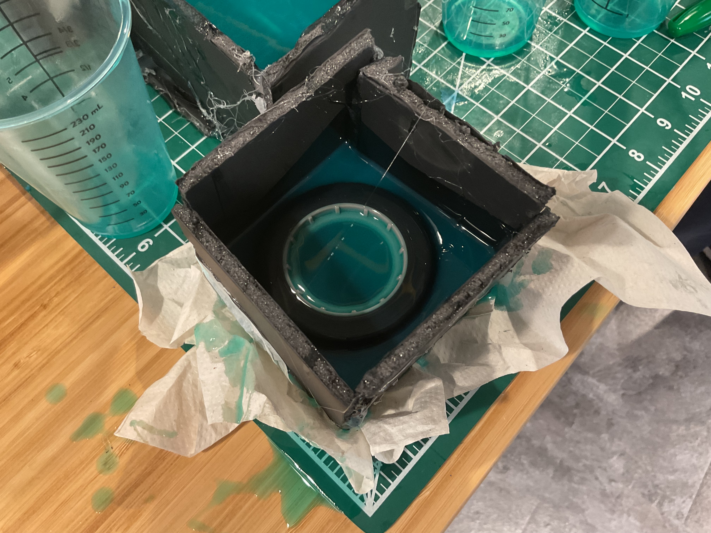
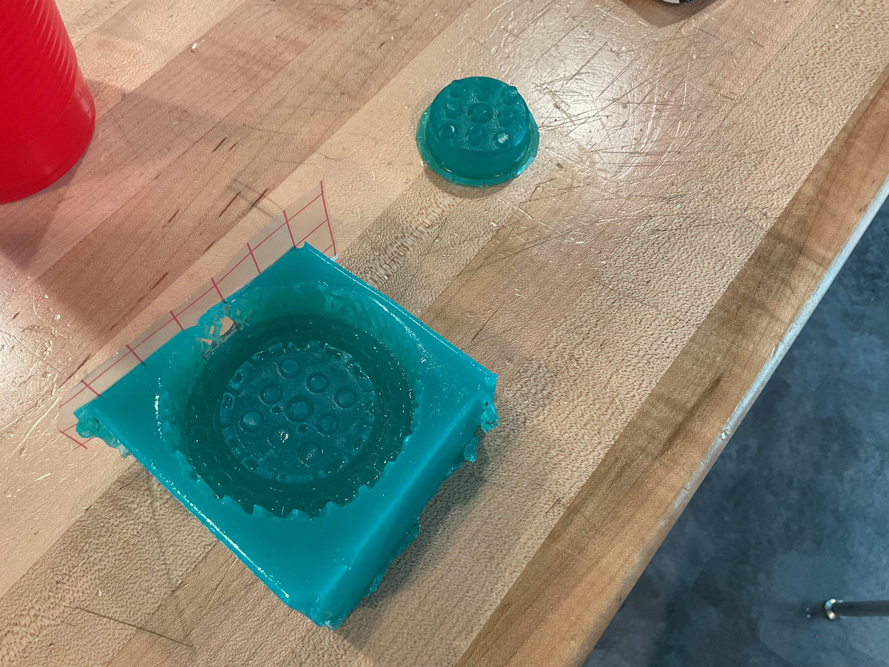
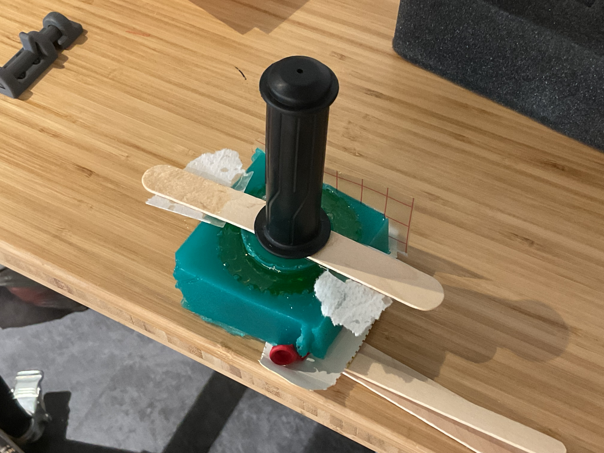
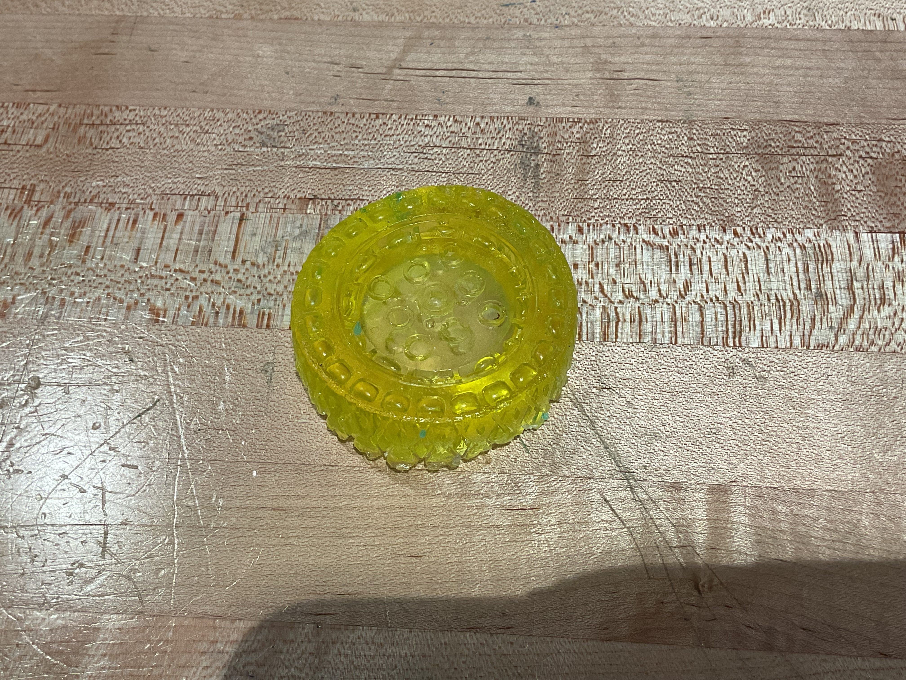
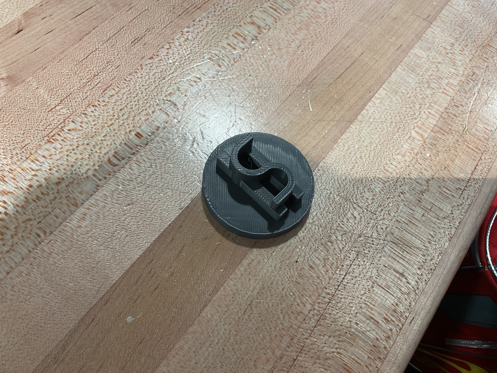
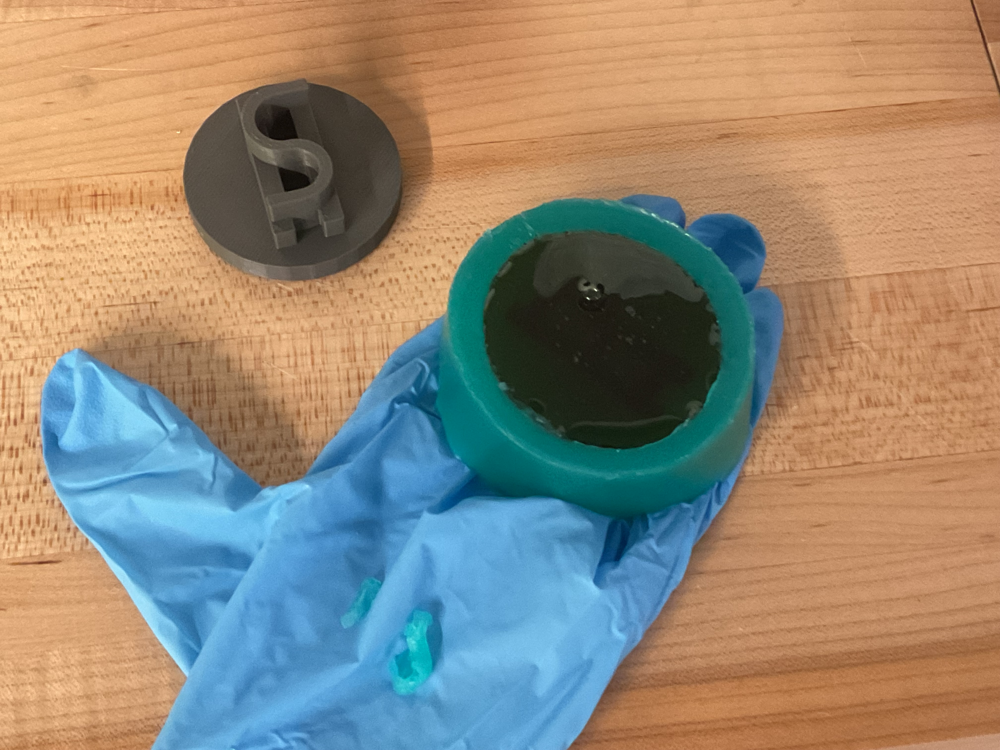
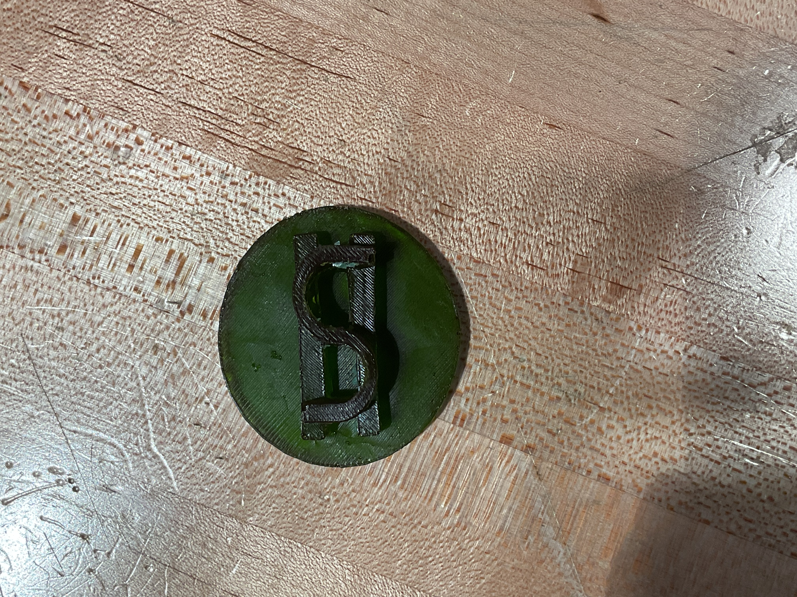

Two-Part Mold
Our next project for engineering was to learn how to make and cast molds of objects. We were given two liquids that could be mixed to create a silicone mold of an object, and two other liquids that could be used to create a resin cast of that mold. We needed to make two different kinds of molds, one with one part and the other with two parts. I chose to begin with the harder challenge, which was the two part mold.

The first part of figuring out a mold is deciding what I wanted to cast. I didn't have anything that could be used in my bag, so I asked if I could borrow a robotics wheel to cast it, and Mr. Perez said yes. The wheel mold could be done in two parts, with one part being the outside and the other being the inside.

Then I set up my molding box. This was a box that we glued together to hold the silicone in while it solidified, to create the casts for the molds. However, mine had some leaks in it, and I had to put some paper underneath it to prevent it from gluing itself to the table. Once that was dealt with, I waited until my next class to see how it tourned out.

This is how the mold came out. After some work to separate the parts from each other, this is how they looked. The wheel shifted slightly too close to the wall while molding it, so some tape was put on that side to create a seal for the casting.

I then prepared the resin, mixed it, and then degassed it so the mold would come out clear. That step was done using a vacuum chamber, which causes the air bubbles trapped inside the mix to come out. I then poured it into the mold, which I then set up as well as I could. It needed a little bit of height on the right side so it would cast evenly, and the inside part of the mold needed some weight on top of it to stay in the correct spot.

Finally, the cast is removed from the mold. It took some effort to fully remove it, as the popsicle stick that I used to hold the inner part had gotten stuck to the resin during the casting, but overall I think it came out pretty well.
One-Part Mold
The one part mold would be simpler than the two part mold, as it just needs to be cast from one side.


I decided to 3d print something to be cast this time, which allows me to use an easier molding process for the object. I decided to make 'Bitcoin' as my 3d printed object. It looks like a completely legitimate currency.
Because of the size of the coin I made, it can be put into a cup, glued to the bottom, and then have the silicone poured over it to create the mold. This is a much easier process than having to construct another box for the coin.

After the mold is created, I removed the coin and began setting up the resin mixture. The desgasser wasn't available this day, so the air bubbles were still left in the resin. Once it was poured, I left it on a table to set.

Finally, I returned to it and removed the cast from the mold. The food coloring I put into the resin mixture had more green in it than I wanted (I wanted to create a money color), but it still looked pretty good.